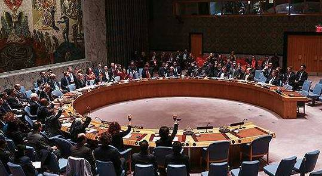
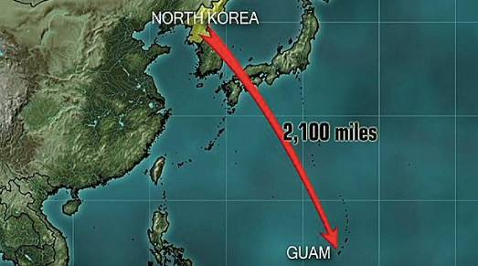
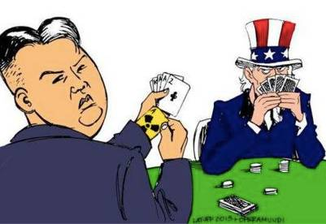
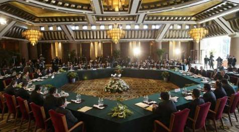
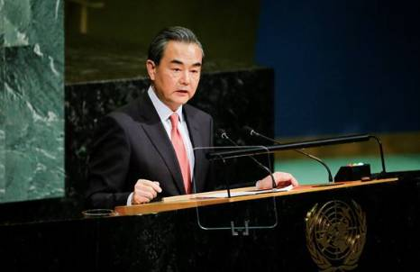

收录于合集
简
江河
法学博士，中南财经政法大学法学院教授，博导，文澜青年学者，湖北省十大中青年法学家。主要研究方向为国际法基础理论和国际海洋法。
**
**
**感谢江河教授对我们的支持！ ******
本文经国政学人公众号首发，转载请注明来处！
摘要
在某一特定背景下，国际社会中实力悬殊的两个或两类国家因对国际法核心价值定位不同，或显性或隐性地游离于国际法之外；而当双方之间的外交博弈陷入困境时，现行国际争端解决机制不能有效发挥作用，国际社会也面临着战争一触即发的危险，朝核危机即为实例。为此，必须找到新的方法或路径，规范双方的外交手段，促进双方建立互信，并在区域或多边谈判机制的协调下指引双方走出外交博弈的困境，使其回归到国际法治框架中，并充分利用联合国安理会的决议为相关协议提供法律保证，以保障相关协议的法律性和可实现性。我国对于在国际关系中所面临的显性或隐性的法外国家也应适时调整外交策略，充分利用大国政治和国际法规则维护自身的利益。
关键词
法外国家 国际法核心价值 朝核危机 大国政治 外交博弈
朝鲜于2012年4月13日发射了“光明星3号”卫星，虽然发射失败，但朝鲜宇宙空间技术委员会声称，其失败的原因将会为继续发射卫星提供经验。朝鲜卫星发射背后的朝核危机在历史上源于冷战时期的朝美关系，有学者将朝鲜半岛视为两极格局瓦解之后的“冷战活化石”。而对于国际法学者来说，朝核危机既展示了国际法视阈下朝美外交博弈的困境，也映射了大国和小国在国际法实施特别是国际争端解决中的立场及其对策，同时还体现了现行国际争端解决机制面临的困境和挑战。实际上，实证法意义上的大国政治和自然法意义上的国家主权平等会使不同国家因国际法核心价值定位的不同而形成对立，并使那些在这种定位中极端化的国家或显性或隐性地游离于国际法之外；而当双边外交博弈和国际法的实施陷入困境时，争端当事国便会走向战争边缘，朝核危机即为实例。在这种情况下，是否能制定一种可行的路线图，使双方摆脱外交博弈的困境而回到国际法规制的轨道上来，并利用现行的国际争端解决机制来解决相关的争议呢？以下笔者试结合朝核危机中的朝美外交博弈来回答这一问题。
法外国家的产生
（一）法外国家的界定
最早提出“法外国家”这一概念的是澳大利亚政府法律顾问杰里·辛普生。他将法外国家分为没有按国际法行事的犯罪国家和宪法上不自由的国家两类 。前者在对外关系上是自由的，在内政上是病态的，包括具有侵略性的国家和拒绝程序正义的国家；后者为不民主的国家，他们对国际社会中的精英国家富有侵略性，从而与民主治理的规范发生冲突。但是， 笔者认为，法外国家既有客观的含义，也有主观的含义。它们分别对应为立法上的法外国家和守法上的法外国家。在国际社会，客观的法外国家是指那些不参与国际法律关系而基本上与世隔绝的国家，主观的法外国家是指那些已经参与国际法律关系但不履行其国际义务特别是条约义务的国家 。当然，这里法外国家的界定和分类是以一国对大部分国际法规范的反复实践为参照系，具体情形下对特定规则的游离无法构成法外国家外延的判断依据。例如，美国虽然没有批准1982年《联合国海洋法公约》，但不能说它就是客观的法外国家。在国际关系中，客观的法外国家是国际法所容忍的，而主观的法外国家是国际法律秩序所排斥的。在国际法律秩序中，国家是最基本的法律主体。国家的社会性体现于国际法律关系之中，国家只能从事国际法许可的行为。一个国家只要事实上参与了国际关系或在法律上被视为国际法的基本主体，那么就无法成为客观的法外国家。作为国际社会的宪法性条约，《联合国宪章》所确立的国际法的基本价值、基本原则和具体规范都说明现代社会不存在绝对的客观性法外国家。具有宪法性的《联合国宪章》为非会员国创设了特定的国际义务。例如，《联合国宪章》第2条规定：“本组织在维持国际和平和安全之必要范围内，应保证非会员国遵循其基本原则”。虽然也有学者对《联合国宪章》的宪法性提出了质疑，认为其法律制度在内容上缺乏普遍性，但他们不得不肯定，这种宪法性在国际和平和安全领域是毋庸置疑的。条约为非缔约国创设义务在《国际刑事法院规约》第12、17、121条和《欧洲联盟条约》第249条中也有所体现。 客观的法外国家不存在的事实决定了现有的法外国家在实践上表现为主观的显性法外国家和隐性法外国家 。
显性法外国家是指那些在国际关系中赤裸裸地违反既定国际法规则的国家。隐性法外国家的认定主要基于两类行为：一是违背国际法的基本原则和有关的国际法规则，通过国际话语霸权和国际机制来主导次级法律规则的产生和发展；二是基于国际法实施机制的脆弱性，通过法律的解释来恶意歪曲既定的国际法规范 。这两种行为的目的都在于推行霸权主义和强权政治。例如，和平利用外层空间是外层空间法的基本原则，大多数国家将“为和平目的利用外空”解释为“非军事化”，而美国和苏联则将其解释为“禁止侵略”，并以保护空间民用设施为由发展太空武器，使“和平利用外空”成为一句空话。
图为美国X-37B空天飞机，这种被称作世界上第一款太空战斗机的武器正是美苏冷战时期军备竞赛的产物
（二）法外国家产生的根源
由于国家综合实力及其对国际机制的影响不同，因此超级大国有可能成为隐性的法外国家，而少数小国因缺乏法治传统而有可能成为显性的法外国家 。虽然就国际关系的整体实践而言，游离于国际法之外的大国和小国并不构成国际社会的大多数，但一旦这两类法外国家成为博弈的双方，则现行国际争端解决机制将很难使双方达成和解，其根源在于这两类法外国家对于国际法核心价值的定位存在分歧。
法的价值具有多元性和有序性，但法律的核心价值体现为内在的正义和外在的秩序。任何法律体系都是一定限度的社会正义与社会秩序的平衡。就国际法而言，主权国家之间的平等往往体现了正义的内在要求，而效率则往往与秩序和实证法联系在一起 。作为现代国际法的基石，《联合国宪章》确认了现代国际法的价值体系及其核心价值。从《联合国宪章》第2条的规定不难发现，联合国三大实质性宗旨的先后顺序体现了其价值定位的优先逻辑：从国际秩序（国际社会的和平和安全）到国家间的友好关系（积极的友好关系包括国家平等之要求）再到人权之尊重和实现（迈向自然法和正义的实质要求）。从联合国主要机关的职能和决策程序看，国家平等和人权保护与联合国大会（以下简称大会）密切相连，而国际和平和安全的维护则是联合国安理会（以下简称安理会）的首要职责。由此可知，联合国的首要宗旨是维持国际秩序，然后才是维持社会正义。秩序在国际法中表述为和平。正是因为和平价值在现代国际法中的重要性，从禁止战争到国家间的相互依赖和实质平等再到基本人权之尊重和保护这样一种价值逻辑预示着联合国未来变革的基本方向：从消极的和平走向积极的和平。同时，《国际联盟盟约》和《联合国宪章》在维护国际和平和安全方面的决策制度又表明，大国一致原则已经被历史证明比协商一致原则能更加有效地制止战争。决策权力和决议实施职责的一致性以及对战争者制裁的外部成本分析都证明安理会的大国政治比国际联盟主张的国家绝对平等更能有效地实现秩序价值。

联合国安理会9月11日一致通过第2375号决议，决定对朝鲜实施新的制裁
正义价值预示着所有人类法律体系的最终发展路径，而大国政治在国际无政府状态中则有效地维护了世界的和平和安全。然而，大国政治也为超级大国的法外游离提供了现实的社会基础和潜在路径。虽然大国政治不会影响其自身在整个国际法律秩序中的合法性，但在特定的国际背景或争端中，大国政治又往往被某些大国所利用成为通向单级霸权的桥梁。在国际关系中，如果排除其内在主观因素的决定作用，那么大国在其外交实践中通常主张国际秩序为国际法的核心价值，而小国则主张体现正义的主体平等为国际法的核心价值。大多数国家都会在主权原则与大国政治的平衡中力求正义和秩序的现实结合，而少数国家则受其主观目的所驱动而走向极端化。这种极端化的倾向使超级大国成为隐性法外国家，同时也使小国成为显性法外国家。而朝核危机在一定程度上正是这种对国际法核心价值定位分化的体现 。
法外国家的法外游离
朝鲜的法律传统、地缘政治以及它与安理会之间的敌对关系使它成为朝核危机中的显性法外国家，而美国的“神圣使命”、美国外交关系政策中的“美国例外论”以及美国在安理会中的特殊地位使它成为朝核危机中的隐性法外国家。将朝鲜定义为显性法外国家主要是因为它赤裸裸地违反了核不扩散法律机制和安理会的相关决议；而作为隐性法外国家，美国对国际法的游离主要表现为它在经济全球化背景下通过对国际机制包括国际经济组织和安理会的控制来推行其霸权政治和单边主义 。
（一）朝鲜：显性的法外国家
朝鲜的外交实践表明它属于主观的显性法外国家。朝鲜的“危险外交”基本上表现为临时单方退出条约以及对安理会决议的违反，从而使其被国际社会认定为赤裸裸的法外国家，而美国将其界定为“无赖国家”或“邪恶轴心国家”，美国对朝鲜的妖魔化及其国际话语霸权则加强了国际社会对朝鲜行为非法性的认同。以国家主权为由退出《不扩散核武器条约》（以下简称《核不扩散条约》）及相关条约并不能改变其退出条约行为的非法性。根据《国际法院规约》第38条的规定，《朝鲜停战协定》和《朝美核框架协定》也构成调整朝美双边关系的国际法渊源。在朝核危机升级的过程中，朝鲜屡次通过退出相关条约来推卸其国际责任。1993年3月12日，朝鲜宣布退出《核不扩散条约》，成为第一个宣布退出该条约的国家；1999年5月31日，朝鲜宣布退出《朝美核框架协定》；2003年1月10日，朝鲜再次宣布退出《核不扩散条约》，并声称其退出决定自次日起生效；2009年5月27日，朝鲜宣布《朝鲜停战协定》对其无效。

图为朝鲜组织数万军民在平壤举行集会，抗议安理会的对朝制裁决议
对于条约的退出，《维也纳条约法公约》（以下简称《条约法公约》）第54条规定：“在下列条件下，得终止条约或一当事国得退出条约：（１）依照条约之规定；（２）无论何时经全体当事国于咨商其他缔约国后表示同意”。从理论上讲，主权国家有权签订和退出条约，只要其不违反条约规定和普遍性国际义务。在条约实践中，大多数条约都要求当事方将退出意图提前通知其他缔约方，或者是申请退出一定期限后条约才对其无效。这些条约退出规则使各缔约方有充分的时间调整与退出方之间因条约而形成的权利义务关系，同时也为退出方重新考虑其退出决定和撤回退出创造机会。基于这种法律关系稳定性的考量，一般的条约都规定退出行为不能立即生效，从而防止退出方利用退出程序逃避其国际法律责任。因此，单方退出条约及其立即生效的行为在法理上是不可接受的，同时也无法免除当事国因违反一般国际法或该条约退出规则而应承担的法律责任。即使在退出条约后，当事国也应为其在退出生效前的违法行为或特定受益承担相应的法律义务，从而保持缔约各方之间权利与义务的平衡。
适用于朝核危机的《核不扩散条约》第10条规定：“每个缔约国如果断定与本条约主题有关的非常事件已危及其国家的最高利益，为行使其国家主权，应有权退出本条约。该国应在退出前三个月将此事通知所有其他缔约国和联合国安全理事会。这项通知应包括关于该国认为已危及其最高利益的非常事件的说明。”与其他条约的退出机制相比较而言，《核不扩散条约》第10条突出了安理会的重要作用，目的在于授权安理会处理那些危及国际和平和安全的退出行为。正因如此，1993年安理会曾建议朝鲜不要退出《核不扩散条约》。《核不扩散条约》第10条实质上也为当事国的退出设置了一定的条件：（1）当事国认定与本条约主题相关的特殊事件已经损害了其至高利益；（2）提前三个月通知其他当事方和安理会。此外，《条约法公约》第43条也规定：“条约……由当事国退出，或停止施行之情形，绝不损害任何国家依国际法而无须基于条约所负履行该条约之所载任何义务之责任”。作为联合国会员国，朝鲜所承担的国际义务也在一定程度上限制了它退出《核不扩散条约》的权利。除第一次退出行为满足《核不扩散条约》中提前三个月通知的要求以外，朝鲜的后两次退出行为在一般国际法、条约法原理以及特定条约规则上都不可接受，从而使其成为国际社会中少有的显性法外国家。
（二）美国：隐性的法外国家
如前所述， 隐性法外国家的存在是以国际法实施机制的基本特性、规避法律责任的主观目的以及主导国际机制的能力为条件的。对国际机制的控制有助于大国获得国际法新议题的动议权并提出有利于自身的建议案。在国际关系实践中，严格说来只有美国才具备这些条件。
沿着新功能主义的“外溢”路径，美国主导的经济全球化不断向其他领域延伸。美国对国际话语权的控制日益使国际社会依其意志塑造国际法律秩序的新议题 。例如，在“9·11事件”之后，反恐逐步成为国际法发展的重要领域。美国的主导作用不仅促进了有关战争的重新界定和国际金融反恐等方面规则的产生，同时也使安理会在这些领域的权力不断扩大，甚至有权制定具有普遍约束力的反恐决议，如有关防止大规模杀伤性武器扩散的决议。权力来源于决策，所有的决策程序都开启于动议。根据西方信息传播学中的“议题设置理论”，国际性传播媒介不能决定各国及其公众怎么想，但能决定他们想什么或讨论什么。由此美国的国际话语霸权沿着决策程序渗透到动议者所生存的国际制度之中。如此一来，美国不但塑造了国际机制赖以产生的语境，而且成为国际社会中新规则的主要动议者。美国话语霸权也促成它在国际司法实践和国际法实施过程中的程序霸权。 朝核危机的国际化为美国成为隐性法外国家提供了可能性，而美国的安理会常任理事国地位以及安理会的双重否决制度也为美国的隐性法外游离政策奠定了现实的制度基础 。
美国常驻联合国代表黑利举手支持对朝制裁决议
（三）法外国家的对抗：朝美之间的外交博弈
冷战结束之后，美国凭着超强的综合实力，通过霸权主义肆意对一些弱小国家动用武力，而那些被其称为“邪恶轴心”的国家（包括朝鲜）感觉安全始终受到威胁。因此，朝鲜的核计划在某种程度上是美国外交政策的结果。 国际社会对于朝鲜“无赖国家”身份的认同虽然与美国的妖魔化有关，但也与朝鲜对安理会相关决议的蔑视密切相连。从某种意义上讲，朝核危机是作为弱势的朝鲜要挟强势的美国的一种外交手段，朝鲜屡次违反其国际责任也是对美国“操纵”安理会和国际原子能机构的回应 。无论是从冷战的历史还是从联合国相关决议的制定背景来分析，朝鲜作为显性法外国家与美国作为隐性法外国家在朝核危机的外交博弈中是互为条件的。实际上，美国与朝鲜仍然处于战争间歇的敌对关系之中。同时，就冷战外交的格局而言，朝鲜半岛在某种程度上类似于欧洲历史上的“火药桶”——南斯拉夫。这为安理会行使其维护国际和平和安全的职能提供了法律依据。
虽然朝鲜和美国都是联合国的会员国，都受《联合国宪章》的约束，但它们对联合国实际运作的影响大相径庭。美国在联合国的建立和《联合国宪章》的实施中发挥着举足轻重的作用，并在很大程度上影响着安理会决议的形成和实施；朝鲜在联合国中较为被动，在多数情况下只能在大会上为自己的行动作出辩解。同时，历史原因、冷战思维以及对国际社会的依赖程度不同，使得朝美两国对联合国的态度及其作用的认定有所不同。 美国只是将联合国特别是安理会作为实现其隐性法外国家战略的重要工具。而自朝鲜战争以来，朝鲜在整体上一直对联合国特别是安理会持敌视态度，就像联合国在朝鲜战争中发挥的作用一样，朝鲜认为在朝核危机中安理会是美国所控制的、反对朝鲜的工具。实际上，联合国的公正性在不断地加强，朝鲜也需要把联合国作为它与国际社会对话的平台 。
美国“911恐怖袭击事件”发生后，美国总统布什宣布向美国政府认为的“恐怖主义”宣战，将伊拉克、北朝鲜、伊朗并称为“邪恶轴心”。图为2003年1月3日，时任美国总统小布什在胡德堡基地发表演讲，演讲中提及与北朝鲜的紧张关系，并表示可能在伊拉克展开军事行动
在朝鲜于2003年宣布退出《核不扩散条约》后，朝核危机的国际化已危及国际和平和安全。针对朝鲜于2006年和2009年进行的系列核试验，安理会分别通过了《第1718号决议》和《第1874号决议》。这两个决议为朝鲜规定了如下义务：放弃所有核武器和现有核计划；立即停止所有相关活动；不再使用弹道导弹技术进行发射，不进行核试验，也不再继续挑衅。同时，这两个决议还要求对朝鲜进行制裁。也就是说，朝鲜在2012年4月进行的卫星发射活动严重违反了安理会的上述决议。虽然在促进国际法的发展方面安理会具有不可替代的作用，但在美国的国际话语霸权和国际程序霸权的主导下，安理会决议及其实施有时难免陷入法理困境。其具体表现如下：首先，安理会相关决议的通过都与美国的动议密不可分。《第1874号决议》便是以美国提出的草案为基础形成的，在很大程度上体现了美国的意志。其次，美国在核问题上存在着双重标准。朝鲜中央通讯社于2006年3月11日发表评论说：“美国对‘核不扩散原则’持双重标准：美国对没有参加《核不扩散条约》的盟国或与其有利害关系的某些国家研发核武器采取默认的态度，甚至提供民用核技术与燃料，而对像朝鲜这样‘不听话’的国家却顽固地坚持‘不能（让其）拥有包括民用在内的核技术’的论调，甚至威胁要进行军事打击。这说明美国所提倡的核不扩散政策完全是根据自身利害关系而确定的”。这种双重标准使美国无法在外交博弈中说服朝鲜放弃核计划。同时，朝核危机也是两个意识形态极强的国家之间的较量，朝美都具有外交宗教化的倾向，朝美博弈实际上隐含着双方在意识形态领域中根深蒂固的敌视情绪。针对安理会《第1874号决议》，朝鲜宣布在“与美国开始全面对抗的情况下”，采取三项措施以“捍卫民族尊严和国家自主权”。这三项措施是：新近提取的钚将全部实现武器化；开始进行浓缩铀作业；朝鲜将把美国及其追随者的封锁视为战争行为，并将采取坚决的军事对应措施。 可以说，只要朝美之间的敌视情绪和互不信任不消除，朝核危机就难以从根本上得到解决 。
对法外国家的国际法规制
（一）规制的前提：朝美外交的困境
在“神圣使命论”和冷战思维的主导下，美国利用其国际话语霸权不断妖魔化朝鲜，从而使朝鲜日益与国际社会对立。 朝核危机完全是两个极不对称的法外国家进行外交博弈的结果。无论是在软实力（话语霸权和程序霸权）还是在硬实力上，朝美之间都有天壤之别。在这种不对称的博弈中，弱势的一方往往会采用较为极端的手段。朝美两国在政治制度、意识形态和融入国际社会的程度上的差异也间接影响了双方在朝核危机上的博弈手段。发展核武器并不是朝鲜的真正目标。对于朝鲜而言，核问题可以要挟美国让步以保障其生存安全；即使要挟不成，其发展出来的核武器对维护国家安全也具有重大的战略意义。因此，在朝核危机上，朝鲜不惜与国际社会对立而成为一个显性的法外国家 。但是，在经济全球化时代，与国际社会的隔绝和长期的经济封锁只会导致国家综合实力的衰退，这又必将削弱其维护国家安全的军事实力和国内政权的稳定性。作为显性法外国家，朝鲜最终将为其违背安理会决议的行为付出代价，这种代价是在国际法中滥用国家主权原则的结果。

8月29日朝鲜成功试射了一枚“火星-12”弹道导弹，金正恩宣称，这次导弹试验是向关岛发射导弹的前奏，朝鲜将密切注视美方的言行
在国际社会中，国家主权的绝对性发挥是与该国的综合实力成正比的。当一个国家的综合实力超强时，这个国家就有可能违反国家主权原则而成为隐性法外国家。作为隐性法外国家，美国无疑是朝美外交博弈中的强势一方，但由于朝鲜的显性法外游离政策及其博弈手段的极端性，美国无法通过正常的游戏规则与之博弈。在朝核危机国际化之后，美国通过安理会使朝鲜在国际社会中更加孤立。同样，作为一个隐性法外国家，美国也必然为其强权外交的隐性法外游离承担责任。就朝核危机而言，一方面美国的霸权政策必然促使朝鲜发展核武器，而另一方面，拥有核武器的朝鲜又对美国未来的安全具有极大的威胁。
“先对话，后废核”和“先废核，后对话”之争体现了朝美之间多年积累而成的信任危机 。建立在互不信任基础上的法外博弈不可能出现双赢的结局。就双方的外交目标而言，朝鲜需要国家安全保障和朝美关系的正常化，美国则要求废核。朝核危机的实质是安全问题。如果安全得不到保障，那么朝鲜只有通过安全自保才能获得国家安全，而核武器是最有威慑力的安全自保手段。然而，如果朝鲜一旦得到了安全保障，那么美国主导的韩日美同盟将失去存在的意义，美国将失去协助其霸权政治在亚洲实现的盟友，这是美国所不愿意接受的。而朝鲜在没有得到安全保障前是绝对不会放弃核计划的，朝鲜核计划的发展又势必威胁到国际核不扩散机制，其中最容易受伤的是美国，维系核不扩散机制是美国的核心利益和战略目标。如此一来，在朝核危机中，朝美外交陷入了困境。
从朝美外交的困境中，我们不难发现，因为朝美两国游离法外的现实使得现行国际争端解决机制对于朝核危机的化解显得力不从心，所以必须另辟蹊径，使这两个法外游离的国家回到国际法制框架中，然后再利用现行国际争端解决机制化解朝核危机 。
（二）规制的法理：国际法正义价值与秩序价值的平衡
国际社会的无政府状态类似于国家产生之前的“自然状态”，而处于这样一种“自然状态”中的朝美关系就类似于“自然状态”中人与人之间的关系，其最基本的需求是制止“一切人反对一切人的战争”，从而寻求各自的安全保障。国际社会的“自然状态”使国家安全和国际秩序成为国际法的核心价值，而其秩序价值的实现取决于大国政治在国际法实施中的主导作用。也就是说，大国政治在某种程度上构成了国际法得以实现的法理基础。 然而在朝核危机中，大国政治凸显为单一的美国式的大国政治。 这种美国式的大国政治绑架了安理会，最终导致安理会相关决议在制订和实施上的“合法性霸权”。当隐性法外国家主导整个国际法体系时，显性法外国家便会“揭竿而起”，从而再现国家之间的“自然状态”，进而危及国际社会秩序 。国际法的实效不但取决于大国政治在国际法实施中的主导作用，而且也取决于守法主体的普遍性。缺乏最基本平等正义的法律规则往往会导致小国对国际法的游离，这必将使国际法规则名存实亡。只要国家主权原则支配着威斯特伐利亚体系，那么成为显性法外国家就具有一定的自由选择性，而成为隐性法外国家则取决于该国的综合实力。在全球化时代，这两种可能性不断地被“复合相互依赖”所削弱，国际法对于法外国家及其赖以生存的自然状态的规制也在逐步加强。

一则演绎朝美关系的漫画
朝美关系恶化的根源在于两国之间的互不信任。冷战后遗症和政治制度的差异都使朝美互信缺乏社会基础。如果说世界各国在经济全球化中形成了一种复合依赖关系，那么朝美关系则另当别论。然而，朝美都不是客观上的法外国家，并且朝核危机威胁到国际和平和安全，两者之间的自然状态又为复数“第三者”如“六方会谈”机制中的四国之间的复合依赖关系以及国际公共秩序所解构，这便使两国的外交行为又回到国际法规制的轨道上来 。
（三）规制的路径：“双边互信→区域合作→安理会保证”三步走
在人类文明的发展进程中，无论是国内社会的自然人之间还是国际社会的国家之间，主导性的争端解决方式都经历了由自助的双边行为（自然人之间的决斗和国家之间的战争）发展为中立第三者的参与（斡旋、调停和仲裁）再到公共权力机构主导的发展阶段。也就是说，当自助行为不能有效解决争端时，寻求中立的第三方解决是其必然趋势，但因后者缺乏强制性的执行保障，于是由具有一定强制力的公共机构加以解决最终成为主导性的争端解决方式。
在朝美互不信任，朝美外交陷入困境之时，朝核危机的化解就必须依靠第三方的保证，“六方会谈”便体现了这种必然性 。 然而历经长达4年共6轮的“六方会谈”虽然就化解朝核危机达成一系列的共识、发表了一系列的声明，但朝美双方仍然未能走出外交困境且朝核危机有愈演愈烈之势。究其原因，在于以下三个方面：（1）因为互不信任，朝美双方仍然持法外游离政策，没有回归到正常的国际法律秩序中来，现行国际法不能有效实施；（2）“六方会谈”的成果不具有法律约束力，很难对朝美双方形成威慑；（3）联合国特别是安理会受美国的影响在朝核危机化解中的角色定位不清晰，未能充分发挥其解决国际争端的作用 。沿着这种思路， 笔者认为，要想在朝鲜的国家安全保障与朝鲜半岛的无核化之间达成平衡，真正有效解决朝核危机，就必须在国际法框架内寻求多边体制的保证。其具体路径如下： （1）美国作为一个大国，不应将大国政治作为实现霸权的工具，并成为游离于自已主导的国际法体系之外的隐性法外国家 。大国应当有大国的责任意识，否则必将重演“大国政治的悲剧——大国与任何一个国家的外交博弈都必将是一场零和博弈，最终并不能取得全球霸权，整个世界充斥着永久的大国竞争”。朝鲜作为联合国成员，应当遵守《联合国宪章》和其他国际法条约赋予的义务，通过正常的外交和国际法手段来解决相关争端，而不是公然违背相关国际法的规定，成为显性的法外国家，否则必将成为美国式大国政治的牺牲品。因为朝核危机，联合国对朝鲜的经济制裁不仅使朝鲜在很大程度上与国际社会隔离，而且给朝鲜的经济发展带来了严重阻碍。对于朝美双方而言，以保障国际安全和和平为己任，改变对国际法核心价值的偏执定位，放弃法外游离政策，取得互信，回归到正常的国际法律秩序中来，如此才是“双赢之路”。 （2） 作为化解朝核危机第三方的“六方会谈”，应当基于朝核危机给东北亚地区安全带来的影响，积极推动和加强化解朝核危机的区域合作 。以“六方会谈”为主导的区域合作化解朝核危机时应当遵守国际法原则，敦促朝美外交朝着规范化发展，以增强朝美双方的互信。 （3） 要真正化解朝核危机，安理会必须摆脱美国的影响和压力，明确自己在化解朝核危机中的角色定位，即扮演朝核危机化解的推动者而不是麻烦者 。以维护国际和平和安全为己任的安理会，因迫于美国的压力而迫使朝鲜放弃一切核活动，使得原本已经取得显著成效的有关朝核危机的多边会谈无果而终。为此，安理会一方面应当努力促使朝鲜改变对其的敌视态度，放弃法外游离政策，回归到正常的国际法律秩序中来；另一方面，应当通过多极均衡式大国政治来抵制单一的美国式大国政治，从而对作为隐性法外国家的美国进行规制，使其回归到正常的国际法律秩序中来。不仅如此，安理会还应通过相关决议，为区域合作下的“六方会谈”达成的成果提供法律保证，以法律手段来保证“六方会谈”成果的法定性和可实现性。一旦朝美双方达成互信，加之区域合作机制的协调和安理会提供的法律保证，相信朝核危机一定能走出朝美外交的困境，迎来和平的曙光。

六方会谈会场
法外国家视阈下的中国外交策略
我国的和平崛起以及世界能源消费量的持续增长及其供应紧张，使得中国成为某些亚洲国家和以美国为首的西方发达国家的“敌人”。于是，针对中国的各种纠纷特别是领土主权纠纷不断。在这种背景下，一方面虽然文化传统和外交国策使我国没有成为隐性法外国家的价值基础和主观目的，但和平崛起的外交实践有可能使我国被其他国家视为潜在的隐性法外国家；另一方面，我国也必须应对某些显性或隐性法外国家的外交挑战。因此，我国应当制定一种更加理性的外交政策，避免被其他国家认定为隐性法外国家；同时，我国也应当制订一套应对显性或隐性法外国家的外交政策和相关的争端解决策略。其具体途径如下：（1）为消除一部分国家关于“中国为潜在的隐性法外国家”的顾虑，我国的大国政治外交可采取多种形式，如采取“高层往来、传播工程、智库交流、特色调研、民间外交和经济联络等多种形式与机制”并充分发挥“政治家外交”、“基础性外交”、“预防性外交”和“人文化外交”的优势和潜力，努力化解与世界各方的矛盾，积极规避风险，缓解国际社会的疑虑、敌意和压力，增强互信。（2）针对显性或隐性的法外国家，我国应当首先通过双边谈判、建立互信来解决双方间的争端，并充分利用大国政治外交向相关国家施加影响。但是，需要注意的是，法治是各国也是国际社会最终的发展趋势，在国际法实践中，过分地强调国家主权和大国政治而抵制法律手段则有可能在战术层面被解读为法外游离政策。因此，我国在国际争端司法解决条款保留的实践中和在国际争端解决方式的选择上应改变传统的司法恐惧心理，使我国的外交实践循序渐进地走向法制化。在外交手段不能有效解决争端且陷入外交博弈的困境时，应适当、合理地寻求司法手段加以解决。虽然大国政治外交能促进我国参与国际司法实践，但实质上无法增强我国在国际争端司法解决中的透明度。具体而言，在应对显性法外国家时，我国应充分参与和利用国际司法机制，以提高国际法规制法外国家的实效；在应对隐性法外国家时，应提高外交软实力，积极参与国际行为规则的制订和实施以及扩大国际话语权，通过多极均衡式大国政治来抗衡隐性法外国家的单边霸权。

9月21日，外交部长王毅出席第72届联合国大会一般性辩论并发表演讲。王毅强调，中国始终是致力于和平的力量，为半岛核问题的和平解决做出了不懈努力。不管形势如何演变，不管需要多长时间，不管遇到什么困难，中国都将坚守半岛无核化的目标，坚持对话谈判的方向，坚定维护地区的和平稳定。
就朝核危机而言，作为利益相关者的中国应制定出切实可行的外交策略，以有效地保障自身的国家利益以及国际和平和安全。朝核危机涉及东北亚地区安全，朝核危机的化解有利于我国获得更为安全的国际环境。同时，一个融入经济全球化并因而受益的朝鲜可使邻国避免落后和动荡所造成的难民问题。作为“六方会谈”的重要动议者和安理会常任理事国，我国是促进朝美外交规范化的关键主体。因此，无论是从国家利益还是从国际机制的可能性出发，我国都有必要制定促进朝核危机化解的对策。笔者认为，首先，我国应通过“六方会谈”来增强朝美之间的信任感，争取“以谈促和”而不是“以压促谈”；同时使朝鲜意识到其法外游离政策与外交诉求的冲突，并利用国际法来维护切身利益。其次，在安理会相关决议的制订过程中，我国应抵制美国的法外游离政策在安理会决议中的合法化。最后，我国应通过《核不扩散条约》缔约国审议大会来制止美国谋求绝对军事优势的防务政策和单边主义军控政策，并逐步改变核不扩散机制内固有的不平衡和不公平，从而克服核不扩散机制的实施困境。 简言之，朝核危机的化解应力求做到国家平等与国际秩序这两种价值的平衡。在处理朝核危机方面，我国不仅应积极推动“六方会谈”和朝美双边会谈以在外交谈判中体现国家平等之价值，而且在敦促各方履行其普遍性或特殊条约的义务时特别是在危及国际和平和安全的情况下还要推动安理会增强国际法的有效性，从而树立一个负责任大国的国际形象 。
文章载于《法商研究》2012年第4期 编辑： 里仝